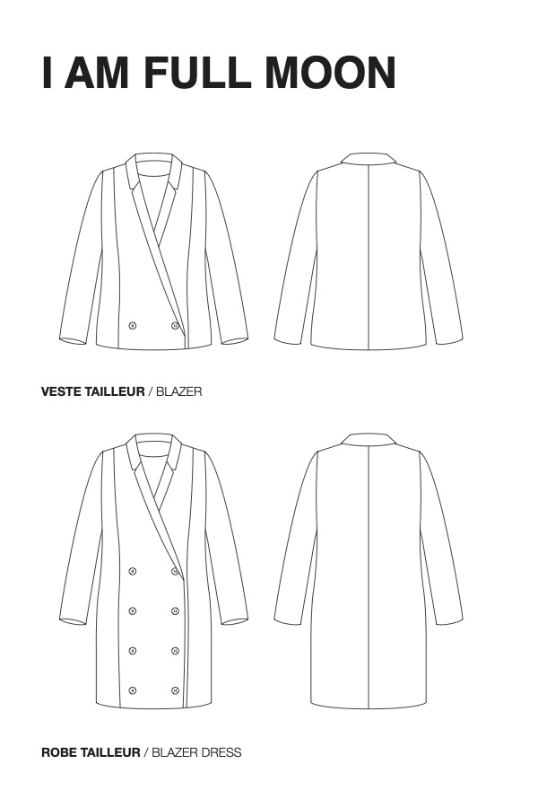

| 1 |
Jolilab |
Blouse Olivia |
- tissu : 1,60m
- 1 bouton
- fil assorti
- thermocollant
- elastique de 0,7mm
|
 |
|
| 2 |
Short Billie |
- tissu : 1,15 m
- 1 fermeture invisible de 22 cm
- fil assorti
- thermocollant
- boucle de ceinture
|
 |
|
| 3 |
Apolline Patterns |
Chemise Janie |
- tissu : 1,40 m
- 9 boutons : 9 mm
- thermocollant : 60 cm
|
 |
|
| 4 |
I am Pattern |
Ciré Jacques |
- tissu ciré : 2,40 m
- doublure : 1,75 m
- 11 boutons pression : 15 mm
- thermocollant :45 cm
- 2 oeillets : 5 mm
- 2 arrêts cordon
- lacet : 110 cm
|
 |
Pas de tuto disponible ... mais une belle vidéo en prime |
| 5 |
Robe Full Moon |
- tissu principal : 2,25 m
- doublure : 1,45 m
- 8 boutons : 20 mm
- thermocollant :70 cm
|
 |